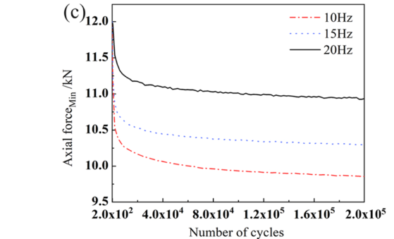
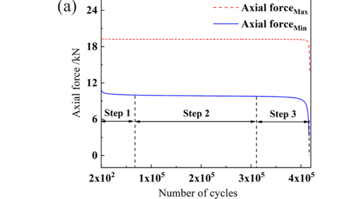

Li 2022 (axial x freq) — estudo de caso— case study
Ti axial, 10/15/20 HzTi axial, 10/15/20 Hz
Figura do artigoPaper figure


Figura(s) originais do artigo (recorte do PDF) — a fonte dos pontos que foram digitalizados.Original figure(s) from the paper (PDF crop) — the source of the digitized points.
Condições do ensaioTest conditions
| ReferênciaReference | H. Li et al. (2022). Tribology Int. 176:107933 · doi:10.1016/j.triboint.2022.107933 |
| ParafusoBolt | M10x1.5 |
| Pré-carga F0Preload F0 | 12 kN |
| AmplitudeAmplitude | — |
| FrequênciaFrequency | 10, 15, 20 Hz |
| Família / nº de curvasFamily / curves | axial · 4 |
| MAE medianomedian | 0.027 |
⚠ cauda com fratura por fadiga — trim recomendado
Informações do artigo — aparato, corpo-de-prova, matriz de ensaiosPaper information — apparatus, specimen, test matrix
H. Li 2022 (Tribology Int.) — frequency effect on axial-excitation loosening, M10
Citation: H. Li et al., "Effect of frequency on the fatigue performance of bolted joints under axial excitation", *Tribology International* 176 (2022) 107933. DOI: 10.1016/j.triboint.2022.107933 (paywall; institutional copy) PDF: pdfs_manual_download/li2022_triboint_axial_freq.pdf (= BAS_V2_papers/D. Rodada 3.../Effect of frequency...pdf)
Apparatus (MSD-block data)
- Shimadzu servo-hydraulic fatigue machine with custom fixture (upper/lower clamping
ends); axial sinusoidal load, force-controlled.
- Preload by torque wrench; bolt axial force measured continuously (F_B,max / F_B,min
envelope per cycle).
- Each parameter group repeated 3–5 times.
Specimen (MSD-block data)
- M10 bolt (A_s = 58 mm²); recommended preload range 10.21–14.30 kN →
P0 = 12.50 kN selected.
- Axial load amplitude A_F = 10 kN, frequencies 10 / 15 / 20 Hz, up to
2×10^5 cycles (full run 4.1×10^5 to fracture at 10 Hz).
- Thread surfaces at 2×10^5: wear debris + spalling grows as frequency DROPS.
Digitized curves
| CSV | Condition | pts | End F/F0 |
|---|---|---|---|
| li2022ti_axialmin_10Hz.csv | Fig 8c, f=10 Hz | 10 | 0.821 (−17.9%) |
| li2022ti_axialmin_15Hz.csv | Fig 8c, f=15 Hz | 9 | 0.858 (−14.1%) |
| li2022ti_axialmin_20Hz.csv | Fig 8c, f=20 Hz | 9 | 0.911 (−8.9%) |
| li2022ti_axial_10Hz_full.csv | Fig 8a, 3-stage full run | 11 | 0.087 (fracture ~4.1×10^5) |
Digitization caveats
- Y-value is F_B,min (minimum bolt axial force within each load cycle), the residual
clamp proxy under sustained axial cycling; normalized by the first plotted value (12.0 kN at N=200; the torqued P0 was 12.5 kN — the first ~200 cycles' loss is not resolved in Fig 8c).
- Full-run curve stage 3 (>3.3×10^5 cycles) is crack initiation/growth at thread root
— out of loosening-model scope, trim for calibration.
- X axis linear; ±0.05 kN reading error.
V2 calibration mapping
- Extends the axial track with the frequency axis (Liu 2017 was fixed 30 Hz): at fixed
A_F=10 kN and P0=12.5 kN, loss after 2×10^5 cycles is 17.9/14.1/8.9% for 10/15/20 Hz. V2's force-mode dissipation is frequency-aware via step_cycle(freq=...) (creep is time-based) — this family directly tests/fits that coupling: lower frequency = more time per cycle = more creep+fretting per cycle.
- Stage I (plastic/asperity) →
k_emb_scale; stage II slow fretting →k_creep_scale+
axial wear; combine with liu2017 preload/amplitude sweeps for a full axial profile.
Modelo vs dadoModel vs data
Cada card = uma curva digitalizada deste estudo: a linha é a previsão do modelo (config adotada, do store canônico) e os pontos são o dado medido; o badge traz o MAE.Each card = one digitized curve from this study: the line is the model prediction (adopted config, from the canonical store) and the dots are the measured data; the badge shows the MAE.
ReprodutibilidadeReproducibility
Cada card tem ↓ CSV (modelo + dado da curva). Os CSVs digitalizados originais ficam em Models/CALIBRATION_AND_VALIDATION/curve_library/digitized_csv/; a curva do modelo vem do store canônico (config adotada por fonte). Para reproduzir localmente:Each card has ↓ CSV (curve model + data). The original digitized CSVs live in Models/CALIBRATION_AND_VALIDATION/curve_library/digitized_csv/; the model curve comes from the canonical store (adopted per-source config). To reproduce locally:
Ver também o guia de uso do programa e a metodologia.See also the program usage guide and the methodology.